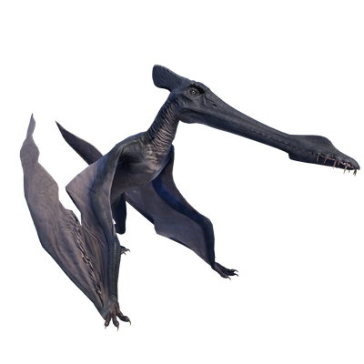

Useful Website
Cearadactylus is a genus of large pterosaur, with a wingspan of approximately 4-5 metres. Its long beak and thin, sharp teeth allow this piscivore to dip down into water and grab fish to eat, while its large eyes ensure it is always aware of any potential threats from nearby predators. This flying reptile’s full name (Cearadactylus atrox) translates to ‘Ceara’s lethal finger’, a reference to the location of its discovery and its sharp talons.
